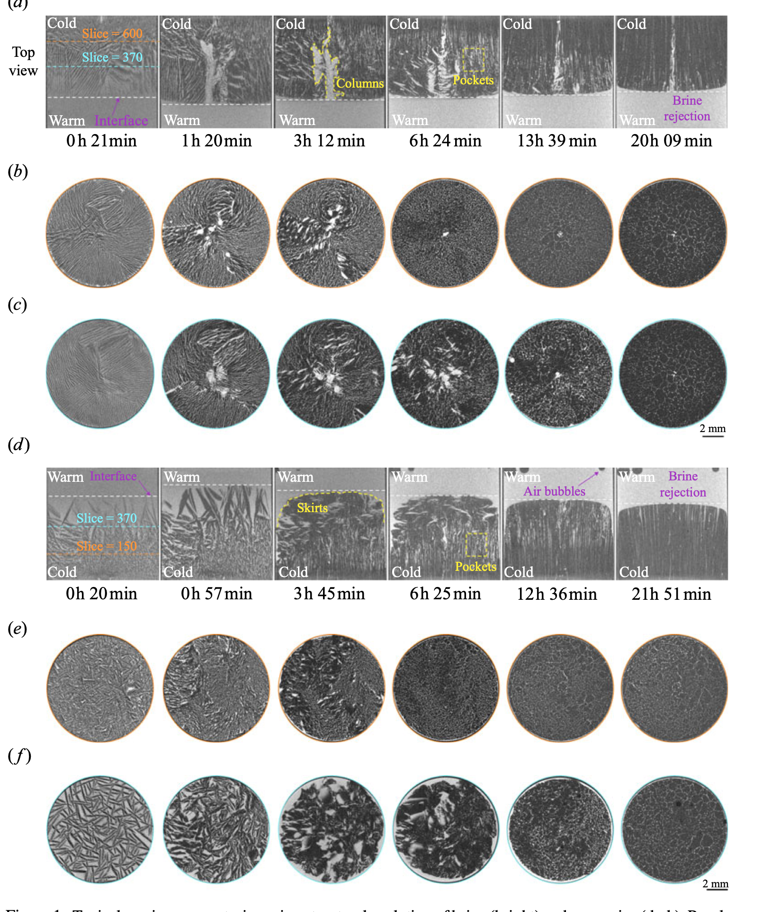
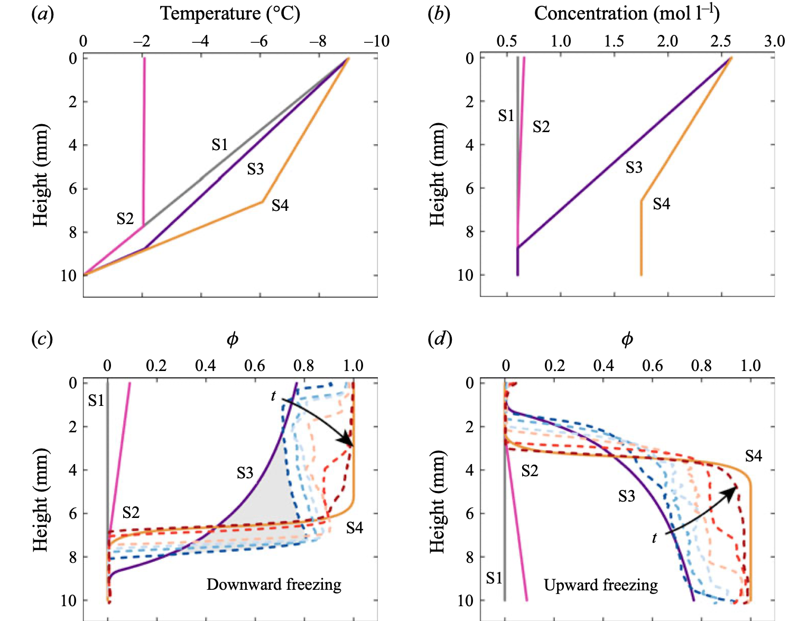
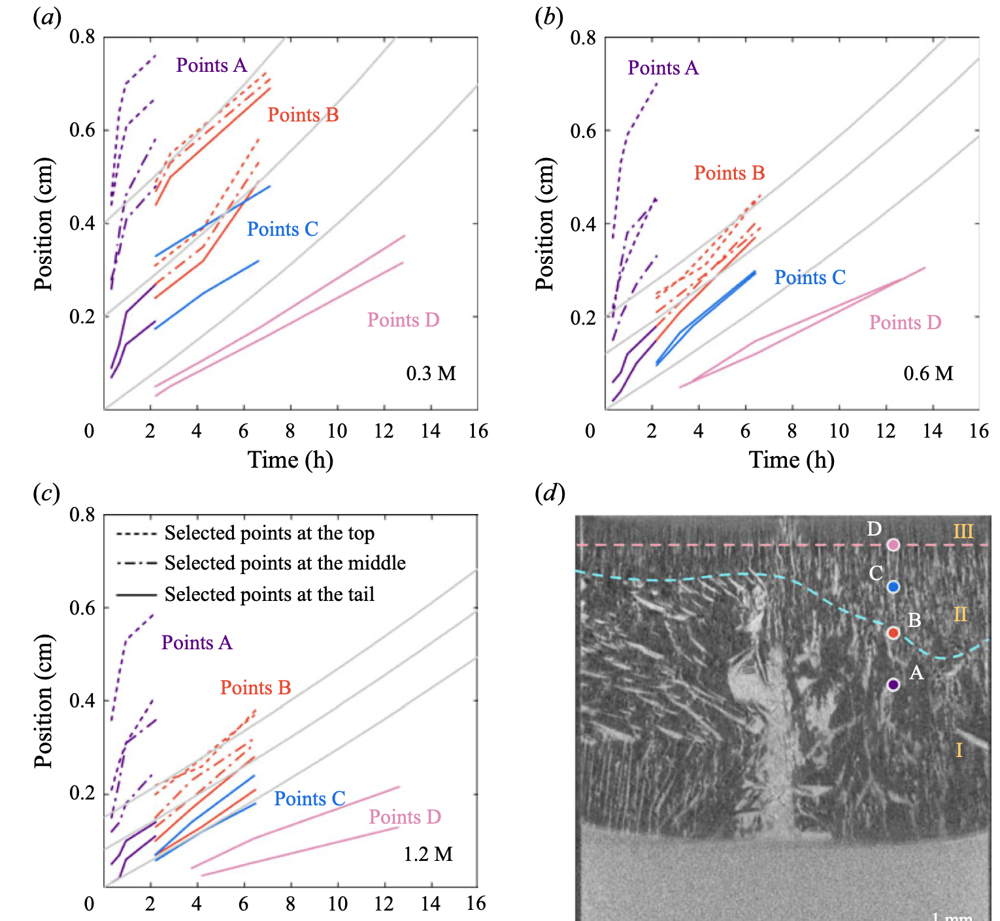
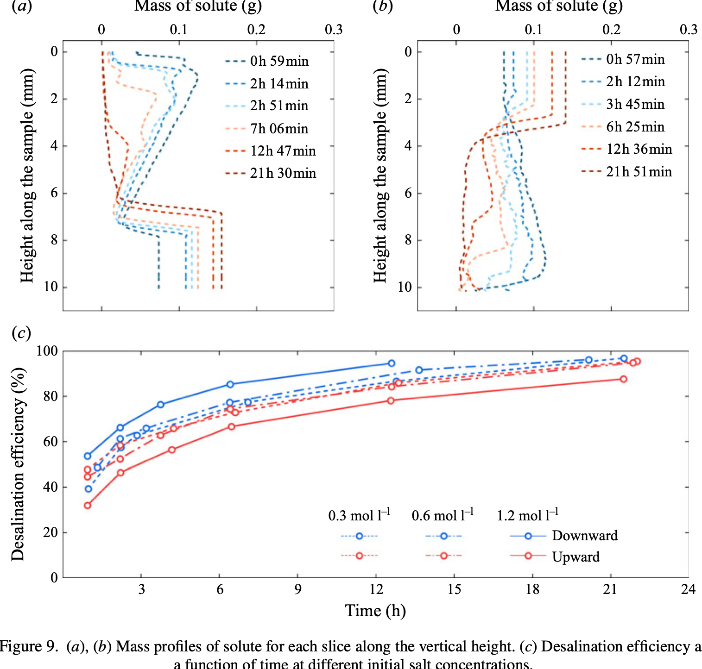

秒级：成核到局部平衡
冰晶在过冷盐水中迅速生长。这个阶段太快，长距离传热和传质还来不及主导，可近似看作局部能量和质量守恒。
Journal of Fluid Mechanics, 2025
这项工作用原位 X 射线 micro-CT 把盐水定向冻结过程拍成 4D 电影，追踪冰-盐水微结构从无序条纹到多边形网络的演化，并解释排盐为何先快后慢。
一句话
当盐水从一端开始冻结，冰晶会快速长入过冷液体，把盐富集在尚未冻结的盐水中。随后盐水被体积膨胀、重力对流和扩散共同搬运。论文的关键贡献，是把这些机制在时间尺度上拆开，并直接观察微结构怎样迁移、变细和残留。
micro-CT 体素分辨率
初始盐浓度，0.6 M 接近海水量级
多数实验 22 h 后达到的排盐效率
为什么重要
海冰形成时，盐会被排到盐水通道中；冷冻淡化希望留下更干净的冰；冻铸、食品冷冻和生物低温保存也都受溶质迁移影响。过去很多理论把冰看成“多孔 mushy layer”，但缺少直接的三维时间序列来说明微结构如何一步步出现。

怎么看见
实验用 KI 盐水提高 X 射线对比度，在圆柱样品上下施加温差：一端保持约 0 °C，另一端降到约 -9 °C。研究同时比较冷端在上方的向下冻结和冷端在下方的向上冻结，从而分离重力对排盐的影响。
核心机制
冰晶在过冷盐水中迅速生长。这个阶段太快，长距离传热和传质还来不及主导，可近似看作局部能量和质量守恒。
热传导重新组织温度场，水结冰的体积膨胀会挤出盐水。向下冻结中，重力相关对流让盐水更快离开多孔冰。
后期主要由扩散控制，但实际洁净冰层增厚比理想扩散更慢，说明复杂孔隙网络和界面效应会限制最终排盐。

看到了什么
成核后产生相对无序的盐水条纹，随后被更垂直、更规则的结构扫过。
向下冻结中盐水向中心聚集成盐柱；向上冻结中盐水更容易在周边形成盐裙。
22 h 后冷端附近盐水口袋体积分数多降到 10% 以下，但残留口袋比理想扩散预测更持久。
多数实验排盐效率超过 90%。向下冻结整体更高，显示重力帮助盐水排出。


分享时可以这样讲
它说明排盐不是单一扩散过程：成核、热场调整、体积膨胀、重力对流、微孔网络和界面作用会在不同时间尺度接力。这个视角可以帮助理解自然海冰，也能指导冷冻淡化中如何选择冻结方向和收冰时间。